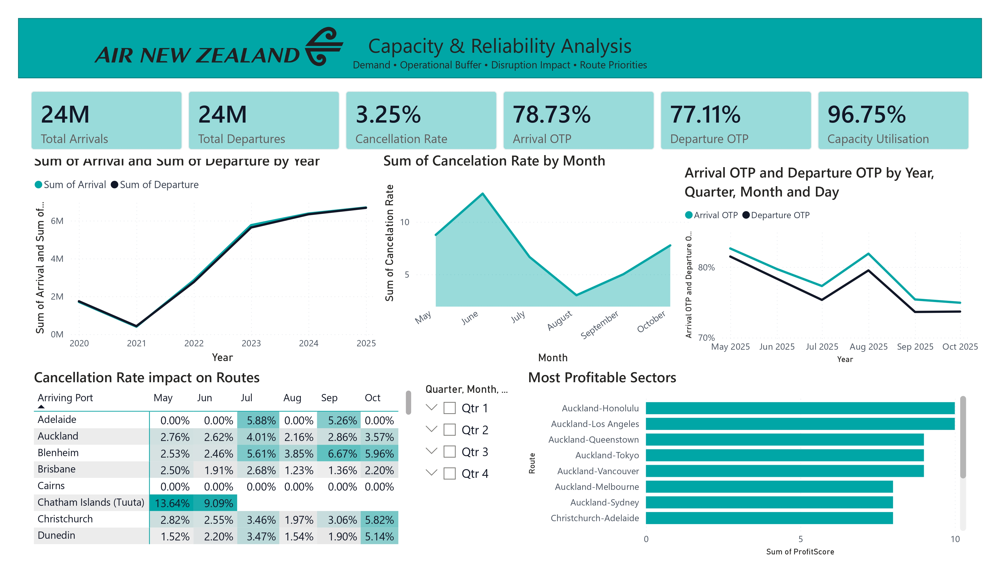
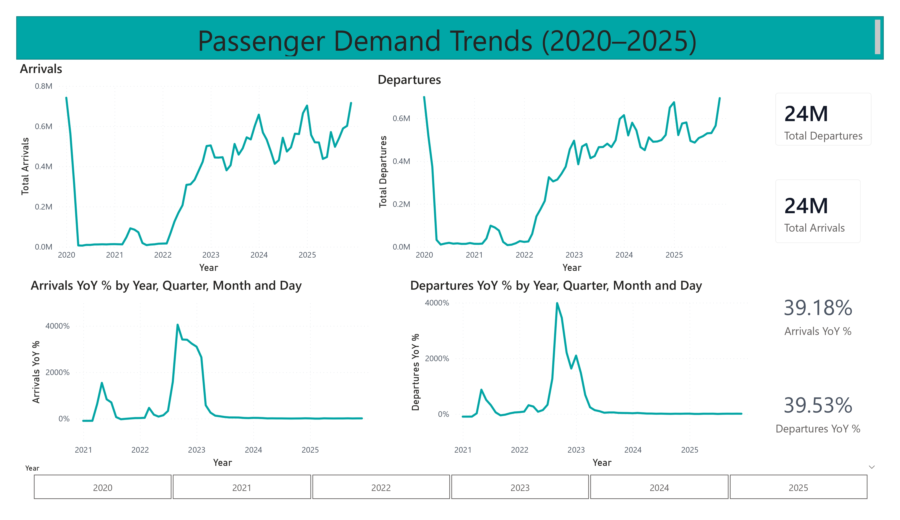
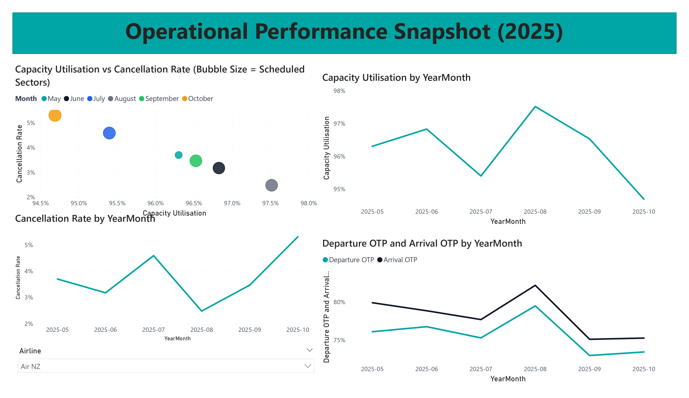
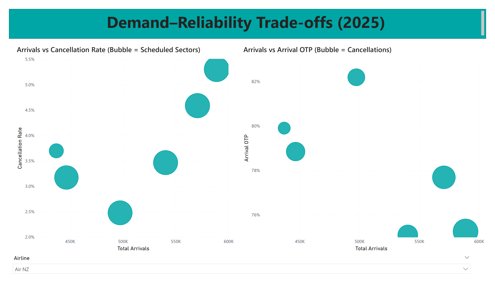
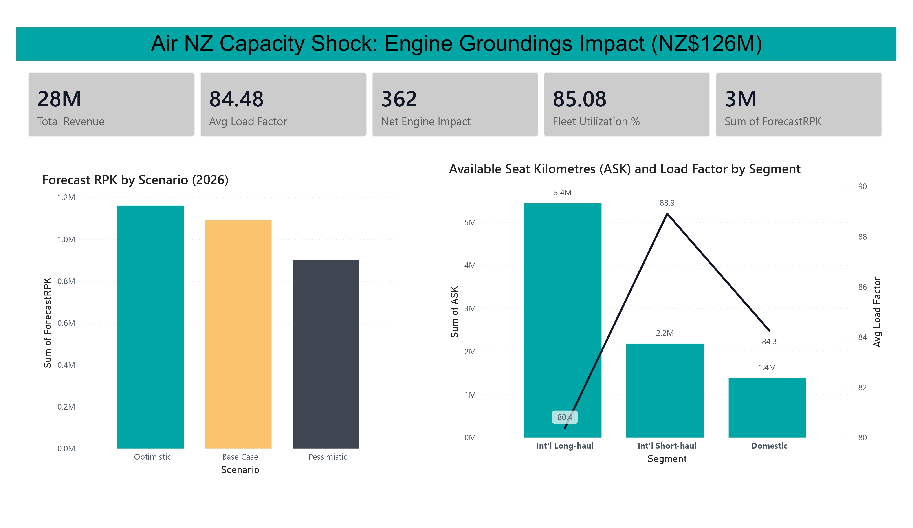

Air New Zealand: Capacity, Reliability & Demand Intelligence in Power BI
A multi-page dashboard suite covering airline demand, operational reliability, route performance, and disruption-led capacity scenarios.

Project Overview
This Power BI case study brings together the core questions behind airline performance into one connected reporting flow. The dashboard suite combines demand movement, cancellations, on-time performance, capacity utilisation, route-level signals, and disruption scenarios so the analysis reads as both an executive summary and a decision-support tool.
Executive Summary Dashboard
The opening page consolidates top-line KPIs such as total arrivals, total departures, cancellation rate, arrival OTP, departure OTP, and capacity utilisation alongside yearly demand trends, monthly reliability patterns, route-level cancellation hotspots, and profitable sectors. It is designed as a management view that quickly moves from headline performance into where attention may be needed across the network.
What Was Analysed
- Passenger demand trends: Arrivals and departures across 2020-2025 to show disruption, recovery, and recent volume movement.
- Service reliability: Cancellation rate, arrival OTP, and departure OTP tracked over time to highlight operational consistency.
- Capacity utilisation: Monthly utilisation patterns compared with cancellations to show how operating intensity and reliability interact.
- Route and sector performance: Route-level cancellation heatmaps and sector views used to surface where results differ across the network.
- Demand-reliability trade-offs: Bubble-chart comparisons exploring how traffic volumes relate to cancellation pressure and on-time performance.
- Scenario-based disruption impact: Revenue, load factor, fleet utilisation, forecast RPK, and segment-level views framed as strategic impact analysis rather than static reporting.
Project Summary
The analytical structure is deliberate: start with a clear executive overview, then deepen into recovery trends, short-term operational monitoring, metric trade-offs, and finally a scenario lens on disruption impact. That progression makes the work useful not only for reporting what happened, but for supporting conversations around performance pressure, network priorities, and operational risk.
Skills Demonstrated
- Power BI dashboard development
- KPI-led executive reporting
- Analytical storytelling
- Demand and time-series analysis
- Operational performance monitoring
- Route and sector analysis
- Trade-off analysis across service metrics
- Scenario-based business impact framing
Dashboard Highlights

Passenger Demand Trends (2020-2025) - This page focuses on long-run demand movement, using arrivals, departures, and YoY patterns to show how traffic changed through disruption and recovery.

Operational Performance Snapshot (2025) - A monthly operating view that compares utilisation, cancellations, and OTP, helping explain where short-term performance strengthened or came under pressure.

Demand-Reliability Trade-offs (2025) - Bubble-chart analysis is used to frame how traffic levels interact with cancellation rate and arrival OTP, making the demand-versus-service relationship easier to interpret.

Capacity Shock / Engine Groundings Impact - This page shifts the dashboard suite into strategic decision support, using scenario comparison and segment-level capacity views to frame the business implications of disruption.
Why This Project Is a Strong Portfolio Piece
This work moves beyond descriptive reporting into a structured analytical narrative. It starts with executive KPIs, expands into recovery and operational performance, then progresses into metric trade-offs and forward-looking scenario analysis. That range shows strong visual communication in Power BI while also demonstrating how dashboard design can support both monitoring and strategy.